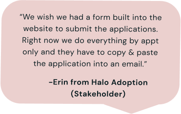

Part I: Research
4 Interviews

Key Goals & Insights
- What makes users want to adopt and ultimately follow through?
- What were the biggest frustrations in finding a pet?
- What ways do people research pets/agencies before adopting?
Demographics
- Tech proficient
- 20-40 years old
- Have adopted a pet before
22 Survey Responses
Results
- Two-week responsive web design sprint, resulting in a high-fidelity prototype of a mobile & web adoption flow.
- Team Project.
- Used Figma, Miro, & InVision.
- Produced qualitative & quantitative research results, a target persona, user flows, storyboards, accessibility analysis, a design system, and high-fidelity prototype iterations.